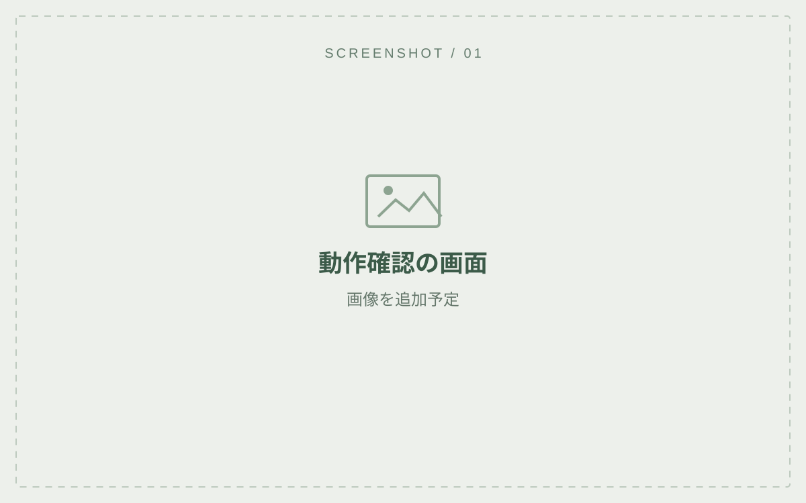
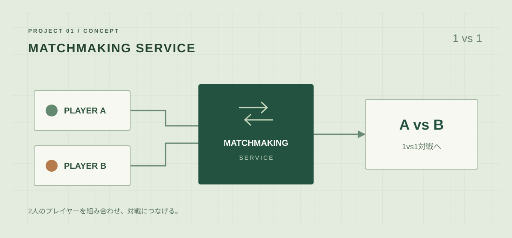
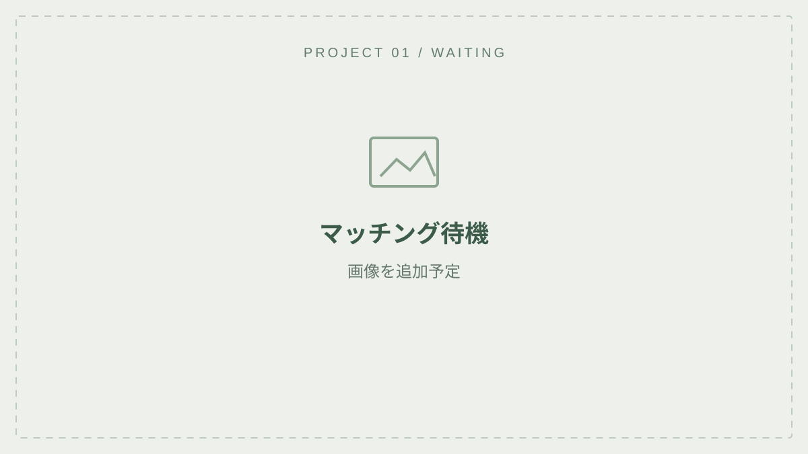
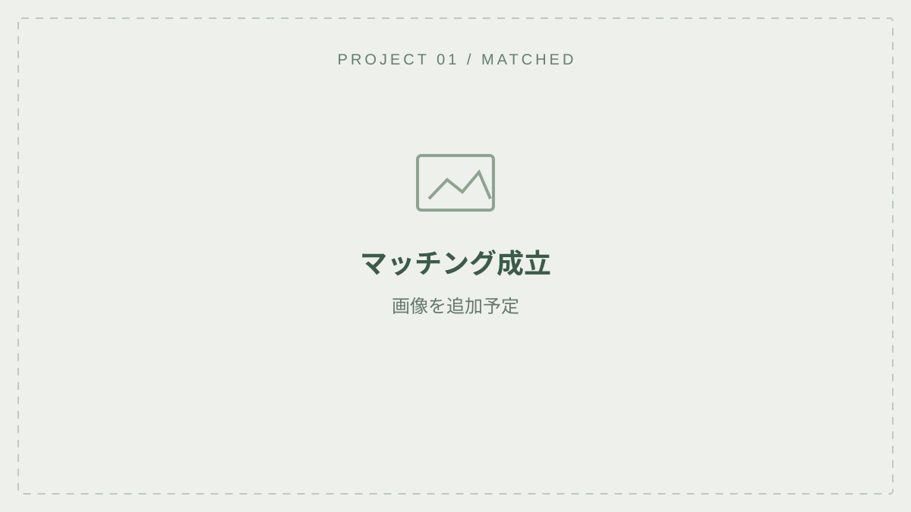
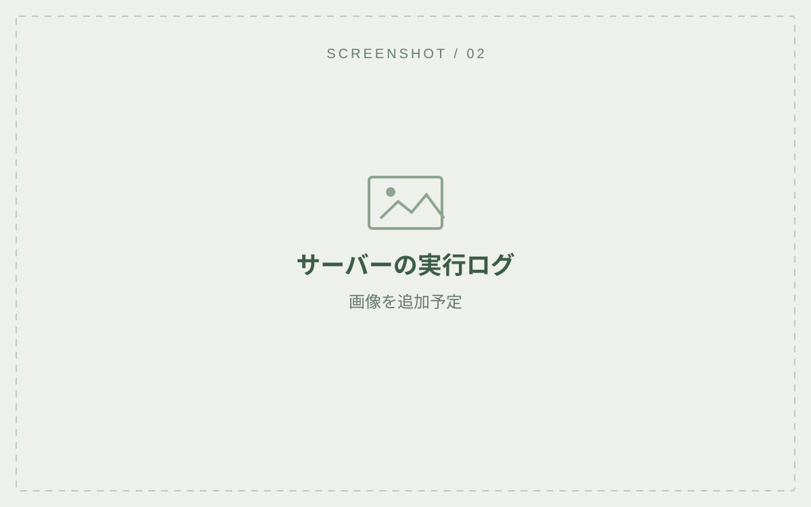
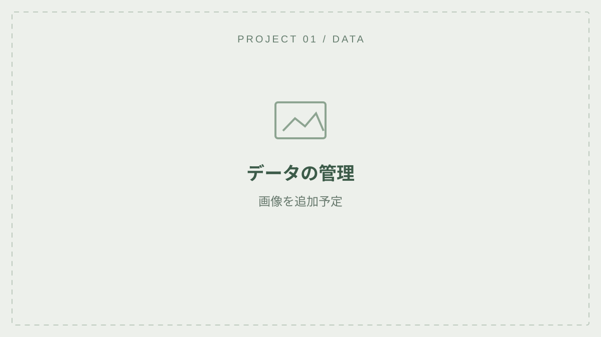
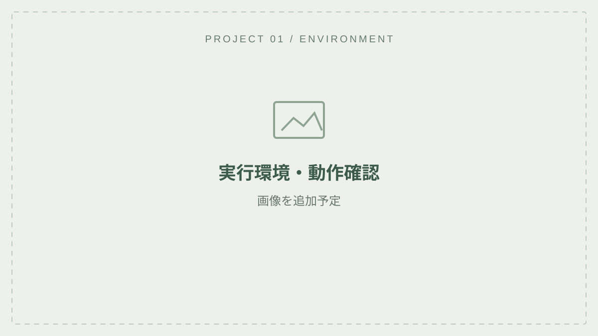
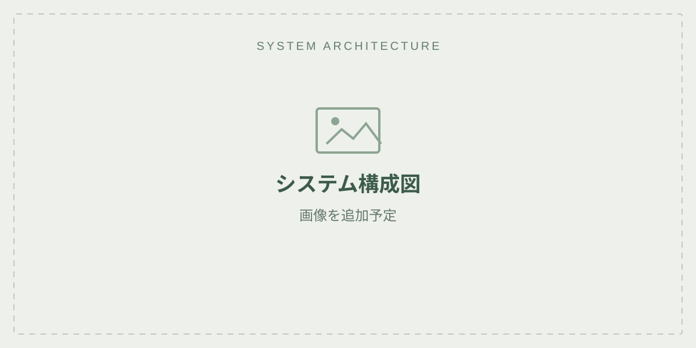

画像を大きく見る ↗01 紹介予定
受付・操作画面
マッチングを始める操作と、画面に表示される情報を紹介します。
- 操作の流れ
- 開始前に必要な操作、入力する情報、開始後の画面の変化を追記します。
- 実装のポイント
- 入力の確認やリクエストの送信など、自分で実装した部分を説明します。
PROJECT 01 / 就職作品
仮題
1vs1対戦の対戦相手を組み合わせるマッチングサービスを題材にした技術デモです。
画面・実行ログ・構成図に、実装の説明を添えて紹介します。
01 / CONCEPT

画像を大きく見る ↗対戦相手を組み合わせるサービスを題材にした技術デモです。
左の画像はテーマを示す概念図です。実際の画面・処理・構成は、下の各項目で紹介予定です。
02 / DETAILS
画像・説明を順次追加します。以下は紹介予定の項目で、実装内容に合わせて更新します。

画像を大きく見る ↗01 紹介予定
マッチングを始める操作と、画面に表示される情報を紹介します。

画像を大きく見る ↗02 紹介予定
対戦相手が決まるまでの待機状態を紹介します。

画像を大きく見る ↗03 紹介予定
2人が組み合わされたことを確認できる画面を紹介します。

画像を大きく見る ↗04 紹介予定
画面の操作に対して、サーバー側で何が起きたかを紹介します。

画像を大きく見る ↗05 紹介予定
データの管理方法を、図や確認画面とともに紹介する欄です。

画像を大きく見る ↗06 紹介予定
どこで動かし、どのように動作確認したかを紹介する欄です。
03 / ARCHITECTURE

画像を大きく見る ↗使用した言語・データベース・実行環境を、実際の構成に合わせて追記します。
通信の流れや各要素の役割が伝わる図を掲載予定です。
04 / PROJECT NOTES
公開できる動画・ソースコードへのリンクは追加予定です。
1vs1対戦におけるマッチングサービスを題材としています。テーマを選んだ理由と、この技術デモで確かめたいことを追記します。
対戦相手を選ぶ条件、待機中の状態、同時リクエストへの対応など、実際に実装した内容に合わせて説明します。
検証した環境・条件・結果と、残っている課題を追記します。測定値を掲載する場合は、測定条件も添えます。